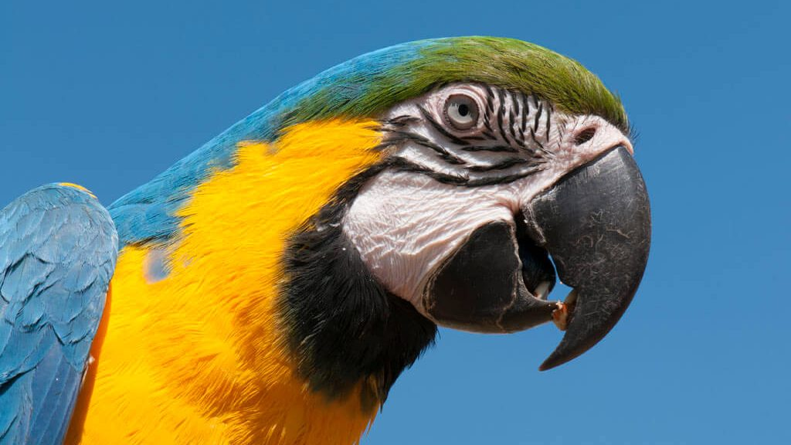
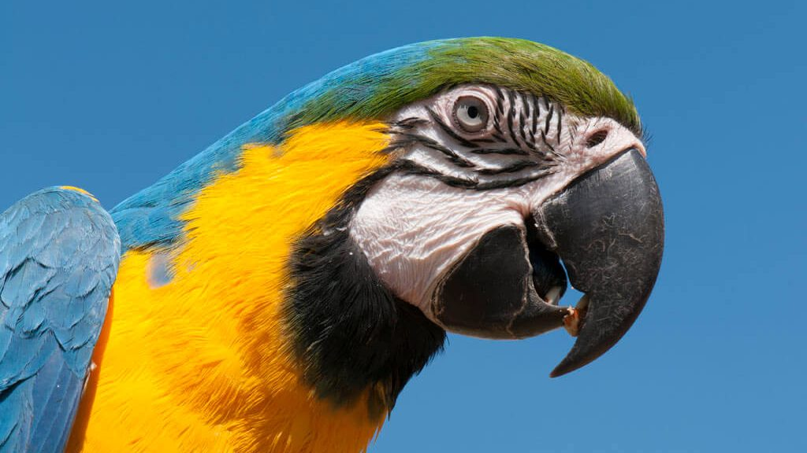

Arara-Canindé
 

INFORMAÇÕES SOBRE O ANIMAL
- Nome Científico: Ara ararauna
(Linnaeus, 1758) - Nomes Populares: Arara de Barriga Amarela, Arara Azul, Arara Amarela.
- Atualmente a espécie não corre risco de extinção.
Classificação Biológica
- Dominio: Eukaryota
- Reino: Animalia
- Filo: Chordata
- Classe Aves
- Ordem: Psittaciformes
- Família: Psittacidae
- Subfamília: Arinae
- Espécie: A. ararauna
Nutrição Geral e Hábitos Alimentares
- Tipo de Nutrição: Heterotrófico
- Hábitos Alimentares
- A Arara Canindé se alimenta principalmente de:
- Frutos e Sementes: As araras-canindé podem comer principalmente frutos e sementes, auxiliando na dispersão dessas plantas. Elas consomem uma grande variedade de frutas maduras e verdes, incluindo espécies como Mauritia vinifera, Astrocaryum sp., Bactris sp., e outras sementes de palmeiras.
Brotos, Flores e Néctar: Além disso, essas aves também se alimentam de brotos, flores e néctar.
Insetos e Larvas: Embora não seja sua principal fonte de alimento, é possível que as araras-canindé também consumam insetos e suas larvas. Morfologia Básica do corpo
- Tamanho Médio: As araras-canindé são aves de tamanho médio. Elas têm um corpo robusto e uma cauda longa. O comprimento total varia, mas geralmente fica entre 75 a 85 centímetros.
- Dimensões gerais
- Envergadura das Asas: A envergadura das asas (distância de uma ponta da asa à outra) pode atingir cerca de 100 a 110 centímetros.
- Peso: O peso médio de uma arara-canindé é de aproximadamente 1,1 a 1,4 quilogramas.
- Plumagem
- A plumagem da arara-canindé é vibrante e colorida. Ela apresenta as seguintes características:
- Cabeça e Pescoço: Azul intenso na testa, nuca e parte superior do pescoço, com uma faixa amarela na testa.
- Costas e Asas: Azul nas costas e asas, com penas de voo primárias e secundárias azuis e amarelas.
- Barriga e Cauda: Barriga amarela e cauda longa com penas azuis e amarelas.
- Face e Olhos: A face tem penas nuas e brancas ao redor dos olhos, que são amarelos.
- Bico e Pés
- O bico é forte e curvo, adaptado para quebrar sementes e frutas.
Os pés são zygodactyl (dois dedos voltados para frente e dois para trás), permitindo que a arara se agarre a galhos e troncos. Comportamento
- Comportamento: As Araras Canindé são aves muito sociáveis e costumam viver em pares ou pequenos grupos. Elas também são frequentemente vistas em grandes bandos de até 50 espécimes.
Além disso, elas são animais muito ativos, gostam de escalar, balançar, pular e mastigar. Elas emitem sons agudos para se comunicar com outras aves da mesma espécie e também para alertar sobre possíveis perigos. - Estratégias de Caça: A Arara Canindé tem uma alimentação muito variada, podendo comer principalmente frutos e sementes, auxiliando em sua dispersão, mas também comem brotos, flores e néctar.
Ela verifica a disponibilidade e a facilidade na captura do alimento e também o retorno energético que este alimento irá proporcionar. - Defesa e Sobrevivência no ambiente: A Arara Canindé desempenha um papel fundamental na perpetuação das florestas através da dispersão de sementes.
Infelizmente, a espécie está ameaçada de extinção, devido principalmente à destruição de seu habitat natural e à caça ilegal. No entanto, ela conseguiu se adaptar ao meio urbano devido às árvores frutíferas presentes na cidade, das quais se alimentam, e por apresentarem locais adequados para sua reprodução. - Principais Predadores da Espécie
- Humanos: Os seres humanos são, de longe, os maiores predadores das araras, por vários motivos. Eles caçam a arara por causa de suas penas e carne, além de contrabandear os ovos e os pássaros jovens para vender na indústria de animais de estimação.
- Águias: Longe do contato humano, as águias são os principais predadores das araras na natureza. A harpia caça a arara quando essas estão nas copas das árvores ou em pleno voo.
- Cobras: As araras não se dão bem no chão e, por isso, não aterrissam nele a menos que estejam em um bando de 30 ou mais aves. Cobras como a jibóia e a sucuri caçam araras como a canindé.
- Animais Domésticos: Outros animais domésticos, como cães e gatos, representam um sério risco para as araras. Se deixados sem supervisão e no mesmo local que a arara-canindé, podem machucá-la gravemente.
- Primatas de médio porte e Gavião-Real: Quando na natureza, seus maiores predadores são os primatas de médio porte como o mico-leão-dourado e o gavião real.
- Tucanos: Tucanos podem comer seus ovos.
Biomas de Ocorrência no Brasil
- Amazonia: Este é o maior bioma do Brasil e um dos habitats naturais da Arara Canindé.
- Mata Atlântica: Apesar do desmatamento, a Arara Canindé ainda pode ser encontrada neste bioma.
- Pantanal: Este é um dos principais habitats da Arara Canindé. No entanto, sua ocorrência no Pantanal é considerada rara.
- Cerrado: Este bioma também abriga a Arara.
- Caatinga: A Arara Canindé também pode ser encontrada nesse bioma.
- Além desses biomas, a Arara Canindé tem se adaptado a viver em áreas urbanas, como a cidade de Campo Grande, no Mato Grosso do Sul, que ficou conhecida como a “capital das araras” devido à presença significativa dessas aves. Isso se deve à presença de árvores frutíferas na cidade, das quais se alimentam, e por apresentarem locais adequados para sua reprodução.
- Mapa de Ocorrência no Brasil
Aspectos Reprodutivos
- A Arara Canindé (Ara ararauna) é uma ave monogâmica, ou seja, uma vez que encontra um parceiro, permanece com ele por toda a vida. Elas fazem seus ninhos a cada dois anos, geralmente entre os meses de agosto e janeiro. Para isso, cavam buracos nos troncos de palmeiras e outras árvores.
A postura consiste em 2 ou 3 ovos de 46,4 x 35,9 mm que a fêmea incuba por 24 a 26 dias. Durante este período, o macho é responsável por alimentar a fêmea e garantir a segurança do ninho. Os filhotes nascem cegos e sem penas, e são alimentados pelo pai e pela mãe com sementes e várias frutas que regurgitam em suas gargantas.
Após a eclosão, os filhotes permanecem no ninho por cerca de 13 semanas e só poderão voar dentro de uma semana após deixar o ninho. Mesmo depois desse tempo, os filhotes permanecerão com seus pais por pelo menos mais 12 meses.
Arara se Alimentando.